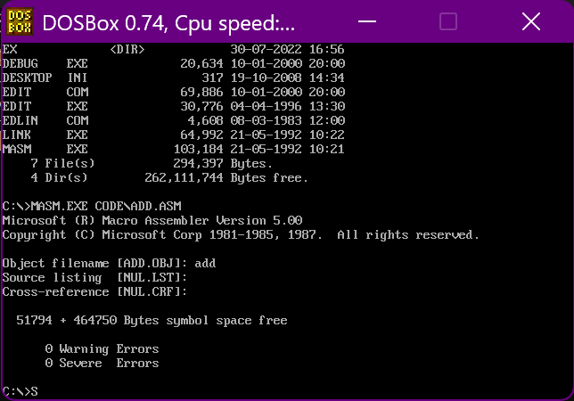
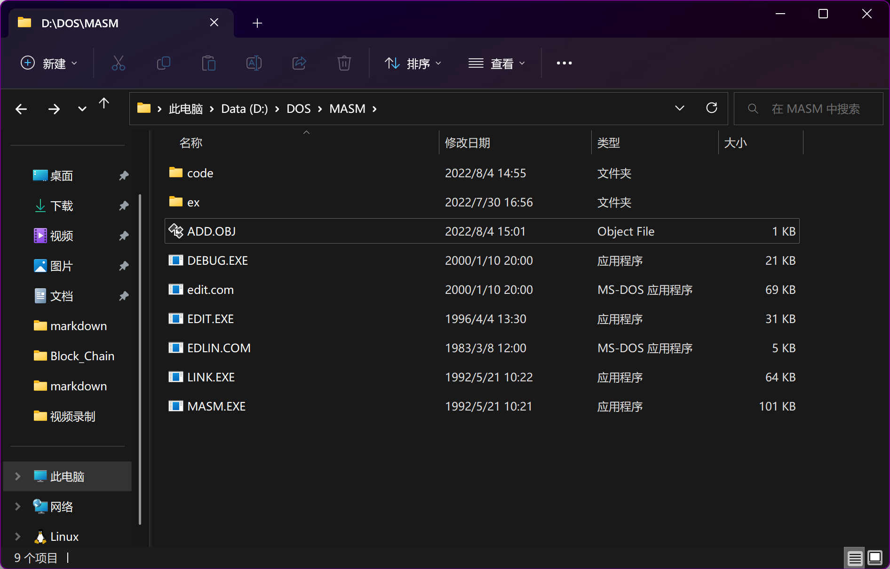
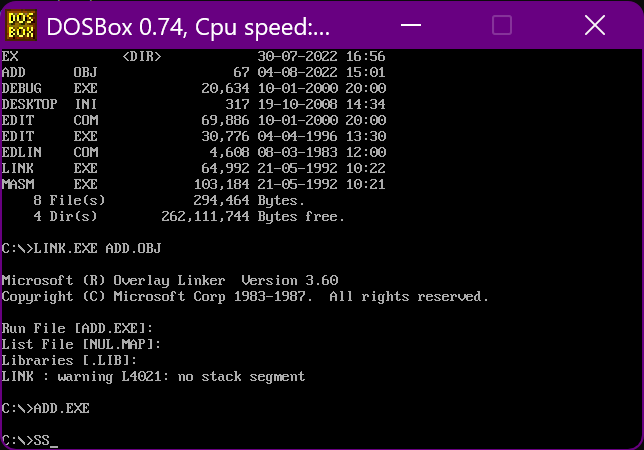
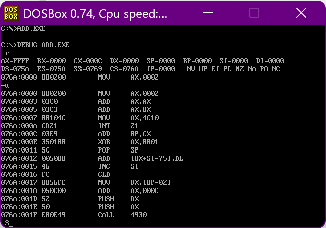
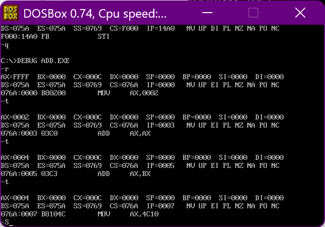

第11节 汇编语言程序
❤️💕💕汇编语言目前仍在发挥着不可替代的作用，在效率上无可替代，在底层，学习linux内核，计算机外围设备和驱动，都离不开汇编。Myblog:http://nsddd.top
汇编程序编译
- 汇编程序：包含汇编指令和伪指令的文本
汇编指令：对应机器码的指令，可以被编译为机器指令，最终被CPU执行。
伪指令：没有对应的机器码的指令，最终不被CPU所执行。
- 伪指令是由编译器来执行的指令，编译器根据伪指令进行相关的编译工作

在上面这个程序中，一直到assume都是伪指令。

这里我们更清楚地说明一下
xxxxxxxxxx21codesg segment2codesg ends ;段的结束
- （codesg是段的名字）是一对成对使用的伪指令，也是写汇编程序时必须要用到的一对伪指令。因为一个有意义的汇编程序中至少要有一个段。
- segment和ends的作用是定义一个段，segment说明一个段开始，ends说明一个段结束。注意区分end和ends
- end也是一个伪指令，是一个汇编程序的结束标记。
- 而ends标志着一个段的结束，可以把ends理解成”end segment“
汇编语言的结构
之前在debug中直接写入指令编写汇编程序，就相当于是一个交互式，不需要伪指令
- 适用于功能简单、短小精悍的程序
- 只需要包含汇编指令
对于单独编写的源文件再编译为可执行文件的程序
如何写出一个程序
求汇编编写 23
定义一个段
xxxxxxxxxx21abc segment2abc ends ;段的开始和结束实现处理任务
xxxxxxxxxx51abc segment2mov ax,2 ;2放入ax寄存器3add ax,ax ;2 + 24add ax,ax ;4 + 25abc ends ;段的开始和结束指出程序在哪结束
xxxxxxxxxx61abc segment2mov ax,2 ;2放入ax寄存器3add ax,ax ;2 + 24add ax,ax ;4 + 25abc ends ;段的开始和结束6end段和段寄存器关联
- 我们用到
abc段，和代码段关联起来
xxxxxxxxxx71assume cs:abc2abc segment3mov ax,2 ;2放入ax寄存器4add ax,ax ;2 + 25add ax,ax ;4 + 26abc ends ;段的开始和结束7end- 我们用到
加上程序返回的代码
xxxxxxxxxx101assume cs:abc2abc segment3mov ax,2 ;2放入ax寄存器4add ax,ax ;2 + 25add ax,ax ;4 + 267mov ax,4c00h8int 21h ;这个是一个套路，我们要记住9abc ends ;段的开始和结束10end
我们后期在处理复杂任务的时候，无非就是实现处理任务中加入或者是处理多个复杂段。
程序中可能的错误
我们要避免语法错误，更要注意逻辑错误
- 语法错误 ： 编译中会指明
- 逻辑错误 ： 程序在编译时不表现出来，但是运行时候出现错误
xxxxxxxxxx101assume cs:abc2abc segment3 mov ax,2 4 add ax,ax 5 add ax,bx ;不会报错6 7 mov ax,4c10h ;写错了不会报错但是后面有问题8 int 21h ;这个是一个套路，我们要记住9abc ends ;段的开始和结束 10end
从源程序到程序运行

我们在MASM文件对应目录下创建code文件夹，新建文件add.asm，写入上面的程序，编译
xxxxxxxxxx11masm.exe code\add.asm
- 目标文件
*.OBJ是我们对一个源程序进行编译要得到的最终结果 - 列表文件
*.LST是编译器将源文件白你以为目标文件过程中产生的中间结果 - 最后两行告诉我们这个程序没有警告错误和必须要改正的错误

验证程序结果
我们只是编译了程序，但是并没有显示程序的执行结果，这个时候我们可以在
debug中调试。
- 使用
masm编译，产生目标文件 - 使用
link命令，把目标文件转为成可执行文件 - 执行可执行文件

debug转载程序
转载
xxxxxxxxxx11debug add.exe程序被转在哪里
-r- DS=？075A
- CS=？076A
查看代码段
-u

分析
程序加载中，DS放程序所在区的段地址，偏移地址为
0,则内存区地址为：DS:0这个内存区的前
256个字节存放PSP,DOS用来和程序进行通信从
256字节后空间存放的是程序，CS的值为DS+10H程序加载后，CX存放的是代码的长度
-t单步执行

[…]和(…)的约定
- […] – (汇编语言语法要求)表示一个内存地址
- (…) – (为学习方便做出的约定)表示一个内存单元或者一个寄存器中的内容
| 指令 | 段地址 | 偏移地址 | 操作单位 |
|---|---|---|---|
| mov ax, [0] | 在DS中 | 在[0]中 | 字 |
| mov al, [0] | 在DS中 | 在[0]中 | 字节 |
| mov ax, [bx] | 在DS中 | 在[bx]中 | 字 |
| mov al, [bx] | 在DS中 | 在[bx]中 | 字节 |
再约定idata表示常量